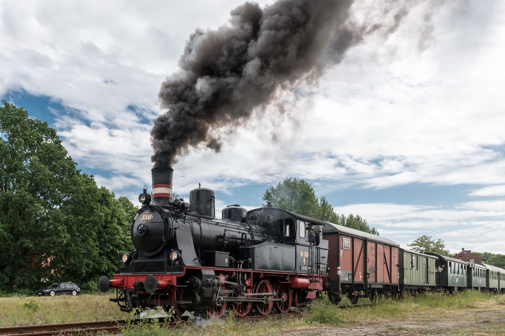
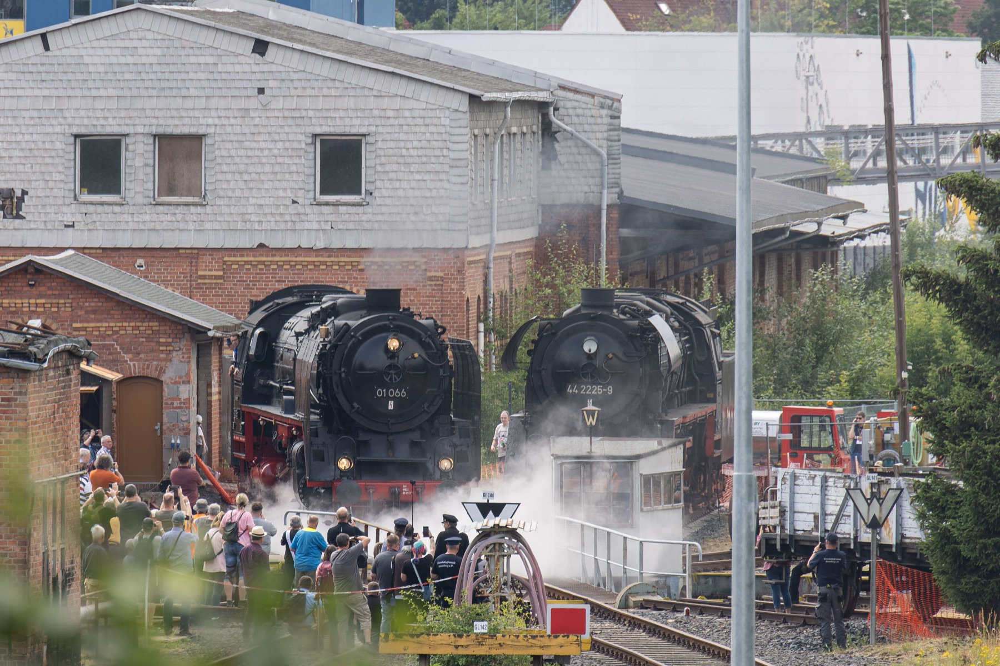
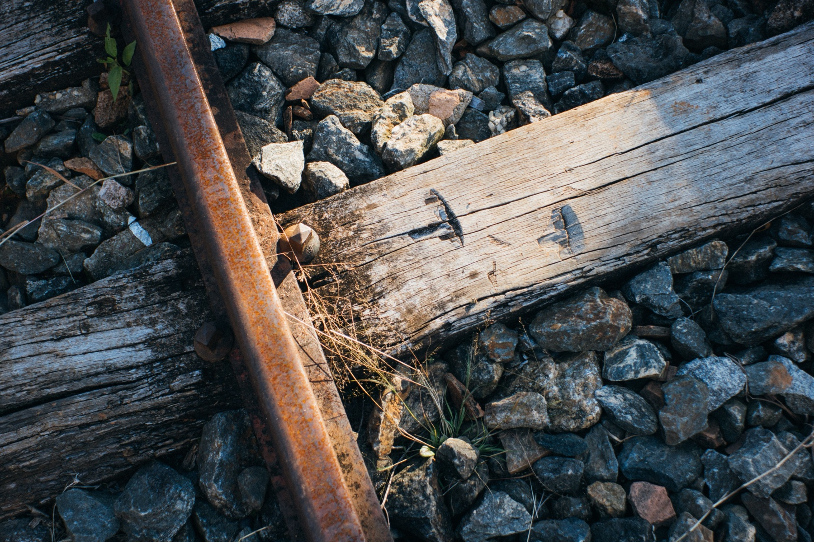

№ 01OZARK RY
The Dusty Gulch Hold-Up
The valley's most polite outlaws board at the trestle to raid the cookie tin. Deputies (ages 3 and up) sworn in before departure.
Adults $18 | Children $12
Book Now!— boarding since 1926 —

The best family adventures — Bandits, treasure maps, and firefly evenings await down the line.
Welcome to the railway
The Ozark Railway is a volunteer-run excursion railway in the timber country of Southeast Missouri. Old No. 9 rolled out of the works in 1926, hauled Ozark timber and mail until the highways came, and has carried families making memories ever since.
It's not an ordinary train. One Saturday the Dusty Gulch Gang "robs" the 11 o'clock; the next, the conductor hands out treasure maps. The railway is a 501(c)(3) nonprofit run entirely by volunteers, and every ticket keeps Old No. 9 in steam for the next hundred years.

Choose your adventure
Every ride lasts about 90 minutes, rain or shine. Click a ticket to punch it.
The valley's most polite outlaws board at the trestle to raid the cookie tin. Deputies (ages 3 and up) sworn in before departure.
Adults $18 | Children $12
Book Now!Legend says a gold spike is hidden along the line. Solve the map's riddles before milepost 7 and claim your prize.
Adults $20 | Children $14
Book Now!An evening run to Miller's Bend, where the meadow glitters with fireflies. Lanterns, lemonade, and stories from the crew.
Adults $16 | Children $10
Book Now!Old No. 9 turns one hundred! Brass band on the platform, cake in every coach, and a whistle salute at the trestle.
Adults $24 | Children $16
Book Now!
Be a part of railroad history
A century of steam is hard on the track. Donate $25 and we'll drive a new spike into the line in your honor, enter your name in the Depot Ledger, and mail you a certificate.
Sponsor a whole tie for $100 and your family name joins the brass plaque on Platform 1.
Sponsor a SpikeNo engine runs alone
Nobody at the HC&N gets a paycheck — just a timetable, depot coffee, and the best seat in the valley. No experience needed; we'll teach you the rest.
Engine Crew
Ticket Punchers
Costumed Characters
Track Gang
Depot Storytellers
Lemonade Brigade
Plan your day
(555) 014-7326
allaboard@hcnrailway.example
The ticket window opens one hour before each departure.